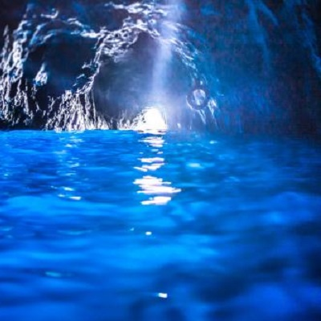
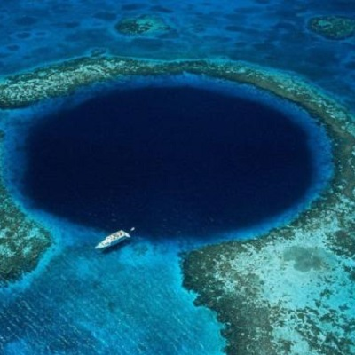
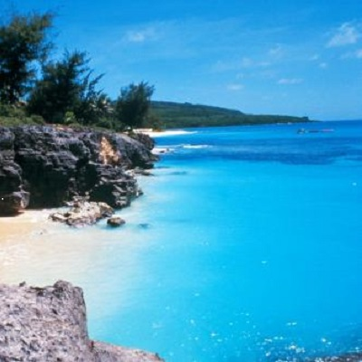
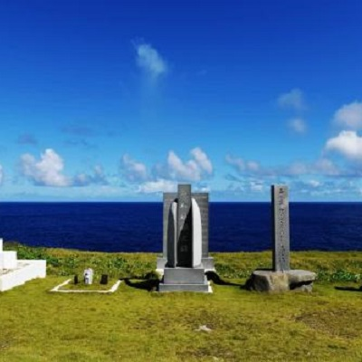
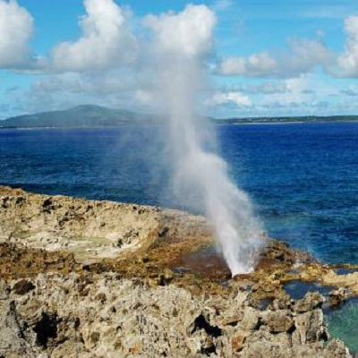
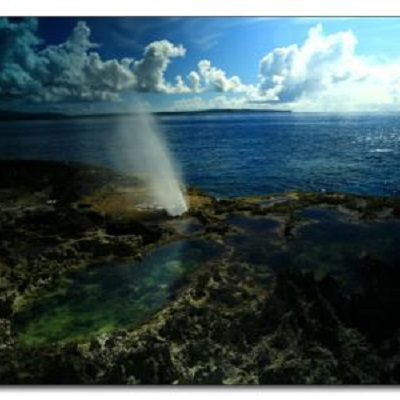
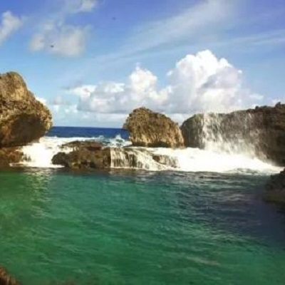
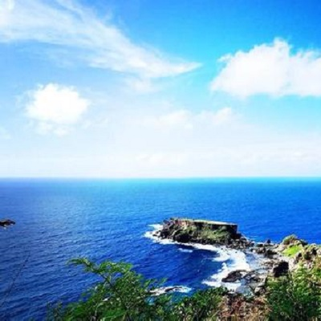

morly旅游网
塞班岛
塞班岛（Saipan）是北马里亚纳群岛联邦首府。现主要出产椰干，亦产芋、木薯、薯蓣、面包果及香蕉，设商船坞和国际机场。
下面来看看它有哪些景点
蓝洞
蓝洞 位于塞班岛东北角，是与太平洋相连的天然洞穴，被《潜水人》杂志评为世界第二的洞穴潜水点，这里常看到潜客们在此练习下水。蓝洞外观看起来像张开嘴的海豚，内部是一个巨大的钟乳洞，是因为海水的侵蚀作用而形成的天然洞穴。由于岩石的阴影投射吸引了更多的水下生物，各式各样五颜六色的热带鱼、海龟、魔鬼鱼、海豚、水母、海胆……海底的世界比陆地还要精彩斑斓。蓝洞里面有两个天然的游泳场，通过海底通道连接外部海洋。对于那些资深的深海潜水者来说，这将是一次无以伦比的体验。
 万岁崖
诸岛上的日军基地，日军退到塞班岛的北端，极端的日本占领军为了逃避被俘虏的命运，逼迫男女老少平民高呼万岁由此跳崖，从此这里就命名为“万岁崖”。后来日本人在万岁崖旁竖立了观音像慰灵塔，而在自杀崖的最高处，也立了和平纪念碑，每年都会有许多日本人到这两个地点吊念、祭拜，安慰生者灵魂。岛上每年有约100万来自日本的游客，大量日本人到这旅游跟这些典故也有很大关系。船程约45分钟，深度约18-30米，一年当中只有很短的时间适宜在这里潜水，此潜点最大特色是陡直深渊的大深度峭壁地形。
 喷水海岸(Blow Hole)
喷水海岸(Blow Hole)位于天宁岛东南端，被列为世界五大奇景之一。 所谓喷水海岸，就是火山熔岩形成的礁石下有一些不规则的洞穴，当潮水扑打过来时，这些洞穴会象鲸鱼似的喷出水来。最壮观的时刻，就是喷水的高度达到差不多20英尺时，所有的人都会被眼前喷射而出的水柱震撼！ 走过坑坑洼洼、长有绿色植物的原始溶岩，便可看见无边无际的海水。靠岸边的地方，有个五彩的池。历经百万年海浪冲击而形成一整排的大小洞穴，有时潮水会从洞穴中喷出，就像大海在“打喷嚏”。风浪大时潮水喷起的高度可达20英呎，相当壮观。喷水洞喷出水柱后，水慢慢地回归消逝，如果您幸运的话，还可以看见彩虹在海与天的空间中变幻出来，甚是美丽。在很远的地方，就可以听见喷水口隆隆作响的声音。在靠近喷水海岸时就可以竖起耳朵来聆听，那也是一种享受！
 禁断岛
禁断岛位于塞班岛的东南面的禁断岛是一个半离岛，潮水高涨时禁断岛与塞班岛是分开的，退潮时仍有部门相连。因禁断岛特殊的地理位置，所以岛上极少有人类的踪迹，在沙滩上布满了各种被海水冲上来的贝壳和珊瑚。 在古代，每当持续一段时间不下雨的时候，当时的土著人就会挑选合适的壮男，并把他带到禁断岛上，砍掉他的头颅，然后扔到海里去祭祀天神，祈求上天降雨。
 内容整理至网络，如有侵权，请联系我们！1255394075@qq.com